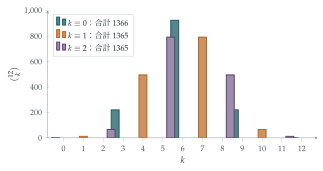

STEP I 1990、第2問
先に進む前に問題を読んでおこう。問題は STEP Support Programme の問題データベースにある： step.maths.org/questions/90-s1-q2
導入
パスカルの三角形（Pascal’s triangle）のある行に並ぶ二項係数（binomial coefficient）の和は \(2^n\) である。\((1 + x)^n\) に \(x = 1\) を代入すればよい。代わりに \(x = -1\) を代入すると交代和が得られ、その値は \(0\) である。この二つを加えると、偶数番目の係数の和は \(2^{n-1}\)、すなわちちょうど半分であることがわかる。つまり、偶数番目の項と奇数番目の項は全体をちょうど二等分するのである。
では、3つおきの係数についてはどうだろうか。位置 \(0, 3, 6, \ldots\) だけを取り出せるような実数 \(x\) は存在しない。しかし、複素数ならば存在する。1の3乗根（cube roots of unity）はフィルターの役割を果たす。すなわち、\(1\)、\(\omega\)、\(\omega^2\) にわたって平均をとると、累乗 \(\omega^k\) は \(k\) が \(3\) の倍数のとき \(1\)、そうでないとき \(0\) を与える。この考え方は1の冪根フィルター（roots-of-unity filter）と呼ばれ、これまでに考案された中で最も重要なアルゴリズムの一つである離散フーリエ変換（discrete Fourier transform）の小さな雛形になっている。
取りかかる前に
\(\omega\) は \(z^3 - 1 = 0\) の解である。\(z^3 - 1\) を因数分解せよ。そこからなぜ \(1 + \omega + \omega^2 = 0\) が得られるのか。
\(z^3 - 1 = (z - 1)(z^2 + z + 1)\) である。\(\omega^3 = 1\) かつ \(\omega \neq 1\) であるから、\(\omega\) は第2の因数の根でなければならない。すなわち \(\omega^2 + \omega + 1 = 0\) である。幾何学的には、\(1\)、\(\omega\)、\(\omega^2\) は原点を中心とする正三角形の頂点であり、それらの和は三角形の重心、すなわち \(0\) である。
順を追って解く
段階 1 絶対値と偏角
\(1 + \omega + \omega^2 = 0\) より \(1 + \omega^2 = -\omega\) である。\(\omega = e^{2\pi\mathrm{i}/3}\) であるから、\(-\omega = e^{\mathrm{i}\pi}e^{2\pi\mathrm{i}/3} = e^{5\pi\mathrm{i}/3} = e^{-\pi\mathrm{i}/3}\) となる。したがって \(1 + \omega^2\) の絶対値（modulus）は \(1\)、偏角（argument）は \(-\frac\pi3\) である。同様に \(1 + \omega = -\omega^2 = e^{\pi\mathrm{i}/3}\) であり、絶対値は \(1\)、偏角は \(\frac\pi3\) である。
段階 2 フィルター
\(k\) が \(3\) の倍数のとき、\(1 + \omega^k + \omega^{2k}\) の値はいくらか。そうでないときはどうか。
\(3 \mid k\) ならば \(\omega^k = 1\) であり、和は \(3\) である。そうでなければ \(\omega^k\) は \(\omega\) または \(\omega^2\) であり、いずれの場合も \(1 + \omega^k + \omega^{2k} = 1 + \omega + \omega^2 = 0\) となる。よって式 \(\frac13(1 + \omega^k + \omega^{2k})\) は \(3 \mid k\) のとき \(1\)、それ以外のとき \(0\) である。つまりこれは \(3\) の倍数を検出する装置になっている。
\(r = 1, 2, 3\) について \((1 + \omega^r)^n\) を二項定理（binomial theorem）でそれぞれ展開し、足し合わせよ。何が得られるか。
\(\omega^3 = 1\) であるから、 \[(1 + \omega)^n + (1 + \omega^2)^n + (1 + 1)^n = \sum_{k=0}^{n} \binom nk\bigl(\omega^k + \omega^{2k} + 1\bigr) = 3\sum_{3 \mid k} \binom nk.\] 一方、段階 1 より \[(1 + \omega)^n + (1 + \omega^2)^n + 2^n = e^{n\pi\mathrm{i}/3} + e^{-n\pi\mathrm{i}/3} + 2^n = 2\cos\frac{n\pi}{3} + 2^n.\] これを \(3\) で割れば求める公式が得られる。■
段階 3 二つの計算
\(n = 25\) のとき、\(\frac{25\pi}{3} = 8\pi + \frac\pi3\) であるから \(\cos\frac{25\pi}{3} = \frac12\) となり、 \[\binom{25}{0} + \binom{25}{3} + \cdots + \binom{25}{24} = \frac{33554432 + 1}{3} = 11184811.\]
二つ目の和では、\(k \equiv 2 \pmod 3\) となる位置が必要である。\(k \equiv 0\) ではなく \(k \equiv 2\) を検出するには、フィルターをどう修正すればよいか。
検出装置をずらせばよい。\(\frac13\bigl(1 + \omega^{k-2} + \omega^{2(k-2)}\bigr)\) は、\(k \equiv 2 \pmod 3\) のときに限り \(1\) となる。\(\omega^{-2} = \omega\)、\(\omega^{-4} = \omega^2\) であるから、 \[\sum_{k \equiv 2} \binom nk = \frac13\Bigl(2^n + \omega(1 + \omega)^n + \omega^2(1 + \omega^2)^n\Bigr).\] \(n = 24\) のとき \((1 + \omega)^{24} = e^{8\pi\mathrm{i}} = 1\) であり、同様に \((1 + \omega^2)^{24} = 1\) であるから、括弧内は \(2^{24} + \omega + \omega^2 = 2^{24} - 1\) となる。\(2^{24} = 16777216\) を用いて、 \[\binom{24}{2} + \binom{24}{5} + \cdots + \binom{24}{23} = \frac{16777215}{3} = 5592405. \qed\]

振り返り
1の冪根にわたる平均は剰余によって項をふるい分ける。 \(\frac13\sum_{r}\omega^{rk}\) は、\(3\) が \(k\) を割り切るかどうかに応じて \(1\) または \(0\) となる。多項式の1の冪根における値を足し合わせると、3つおきの係数が取り出される。
フィルターをずらす。 平均をとる前に \(\omega^{-rj}\) を掛けると、\(k \equiv j\) となる係数が取り出される。
実数の答えのための複素数。 答えは整数であり、問題も整数についてのものであったが、その道筋は複素平面を経由していた。
背後にある数学
\(3\) を任意の \(N\) に、\(\omega\) を \(e^{2\pi\mathrm{i}/N}\) に置き換える。数の列 \(a_0, a_1, \ldots, a_{N-1}\) に対して、数 \[\hat a_r = \sum_{k=0}^{N-1} a_k\,\omega^{rk}\] はその離散フーリエ変換をなし、フィルターの恒等式 \(\sum_r \omega^{rk} = N\) または \(0\) のおかげで、\(\hat a_r\) から \(a_k\) を復元することができる。この変換は信号をその構成周波数に分解する。1965年、James Cooley と John Tukey は、これを \(N^2\) ステップではなくおよそ \(N\log_2 N\) ステップで計算する方法、すなわち高速フーリエ変換（fast Fourier transform）を発表した。ガウス（Gauss）は1805年に本質的に同じ考えを見出していたが、公表することはなかった。FFT は音声・画像の圧縮（MP3 や JPEG）、携帯電話の信号、医療用スキャナー、巨大な数の乗算などに用いられており、しばしば20世紀で最も重要なアルゴリズムの一つに数えられる。
母関数
このフィルターは、より大きな考え方の一例である。数列 \(a_0, a_1, a_2, \ldots\) は、多項式またはべき級数（power series）\(A(x) = \sum a_kx^k\)、すなわちその母関数（generating function）としてまとめることができ、数列に対する操作は関数に対する操作になる。\(1\) での値をとれば数列の和が得られ、1の冪根での値をとれば剰余類（residue class）が取り出され、微分すれば各項に \(k\) の重みが付く。これにより多くの数え上げの問題が代数の問題に変わり、第 9 章では中心的な手法となる。同じフィルターを5乗根を用いて \((1 + x)^n\) に適用すると、正五角形や黄金比（golden ratio）とのつながりが見えてくる。1の冪根の代数については 第 6.1 節 でさらに追究する。
思考のスキル
和の中からある条件を満たす項を取り出すには、欲しい項では \(1\)、それ以外では \(0\) となる関数を、対称的な平均から組み立てればよい。
1の冪根にわたる平均はその古典的な例である。「対称性の群にわたって平均をとり、欲しい部分を分離する」という同じ原理は、1の冪根フィルターから群の表現論（representation theory）に至るまで、代数学のいたるところに現れる。
次の一歩
偶数番目。 1の平方根（\(1\) と \(-1\)）によるフィルターを用いて、\(\binom n0 + \binom n2 + \binom n4 + \cdots = 2^{n-1}\) を示せ。
残りの剰余。 \(\binom n1 + \binom n4 + \binom n7 + \cdots\) の公式を求め、三つの公式の和が \(2^n\) になることを確かめよ。
4つおき。 \(\mathrm{i}\) を用いて、\(\binom n0 + \binom n4 + \binom n8 + \cdots = \frac14\Bigl(2^n + 2^{n/2+1}\cos\frac{n\pi}{4}\Bigr)\) を示せ。
割り切れる条件。 \(\{1, 2, \ldots, 12\}\) の部分集合のうち、要素の個数が \(3\) で割り切れるものはいくつあるか。要素の和が \(3\) で割り切れるものはいくつあるか。（後者のヒント： \(\prod_{j=1}^{12}(1 + x^j)\) を1の3乗根で考えよ。）
さらに学ぶために
Herbert Wilf, generatingfunctionology（A. K. Peters；オンラインで無料公開）。母関数への楽しい入門書であり、1の冪根フィルターは早い段階で登場する。
Arthur Benjamin & Jennifer Quinn, Proofs That Really Count（Mathematical Association of America）。二項係数の恒等式を数え上げによって証明する。
T. W. Körner, Fourier Analysis（Cambridge University Press）。離散フーリエ変換と FFT を扱っている。